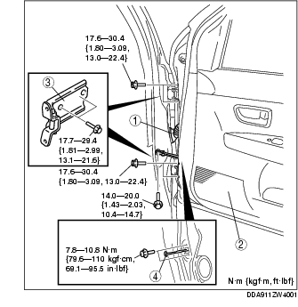
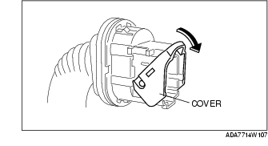

Front door removal/installation
1. Disconnect the negative battery cable.
2. To remove the front door hinge, remove the front fender panel.
3. To remove the checker, remove the door speaker.
4. Remove in the order indicated in the table.

|
1
|
Connector
(See Connector Removal Note)
|
|
2
|
Front door
|
|
3
|
Front door hinge
|
|
4
|
Checker
|
5. Install in the reverse order of removal.
6. Adjust the front door. (See DOOR ADJUSTMENT.)
Connector Removal Note
1. Pull the rubber boot outward.
2. Pull down the cover in the direction indicated by the arrow and disconnect the connector.
